01 — Về emTừ người viết nội dung thành người dựng hệ thống.
01 — About meFrom writing the content to building the systems.
Em bắt đầu từ Content Marketing và bén duyên với MarTech. Làm được một thời gian thì em nhận ra mọi việc nên có quy trình + hệ thống và có thể đóng gói được. Tối ưu những việc lặp đi lặp lại mỗi ngày ngốn hết thời gian lẽ ra dành cho việc nghĩ.
I started in Content Marketing and found my way into MarTech. After a while I realised every job should sit on a process and a system, and that it can be packaged. The repetitive work that eats the hours meant for thinking is exactly what should be automated.
Thế là em học code theo sự hướng dẫn của leader. Gần 2 năm tại một công ty lữ hành đón khách quốc tế, em cùng xây và vận hành
hệ thống tự động hoá marketing dùng chung cho khoảng 40 nhân sự ở hai văn phòng:
hệ thống chatbot AI, email markting & rep mail tự động, dashboard cho Sale và Marketing,
cho tới luồng tự động viết bài cho website.
So I learned to code, guided by my leader. Over nearly two years at an inbound tour operator I helped build and run
the marketing automation stack shared by around 40 people across two offices:
AI chatbots, email marketing and automated email replies, dashboards for Sales and Marketing,
through to a pipeline that writes website articles on its own.
Cách làm của em là coi AI như một cộng sự thật sự: nhờ nó viết code, viết kịch bản, dựng
những chương trình nhỏ chạy ngay trên máy. Nhờ vậy có thể nâng cao hiệu suất làm việc lên x2 x3.
The way I work is to treat AI as a real colleague: I have it write code, write scripts and build
small programs that run right on my own machine. That is how output goes up two or three times.
Em biết mình còn nhiều thứ phải học, nên làm xong việc gì em cũng ghi lại thành tài liệu,
để lần sau làm nhanh hơn và để người khác dùng được.
I know there is plenty left to learn, so I write up every job once it is finished, to be faster
next time and so that someone else can pick it up.
02 — Định hướngChặng tiếp theo em muốn đi.
02 — Where I am headingThe next stretch I want to walk.
Em làm marketing theo cách của một người dựng hệ thống: tìm chỗ đang tắc, rồi làm ra thứ chạy
thay mình. 2 năm qua em đi từ content sang tự động hoá, và vẫn đang học mỗi ngày.
I do marketing the way a systems builder would: find where the work is stuck, then build the thing
that runs in my place. Over two years I moved from content into automation, and I am still learning every day.
Chặng tiếp theo em mong được đi sâu hơn về tự động hoá bằng code và
cách vận dụng AI trong marketing, đồng thời giữ nền content marketing
và tư duy quản trị kinh doanh làm điểm neo. Em tin một hệ thống chỉ có giá trị khi nó phục vụ
đúng bài toán kinh doanh, nên em không muốn dừng ở việc viết được code chạy.
For the next stretch I want to go deeper into automation with code and
applying AI in marketing, while keeping content marketing and
business management thinking as my anchor. I believe a system is only worth something when it serves
the right business problem, so I do not want to stop at writing code that runs.
Em cũng biết mình còn thiếu, đặc biệt là chiều sâu kỹ thuật và kinh nghiệm làm trong một đội có
quy trình bài bản. Đó chính là lý do em tìm môi trường mới: để được học từ người giỏi hơn, làm ở
quy mô lớn hơn, và va vào những bài toán mà một mình em chưa tự nghĩ ra được.
I also know where I fall short, especially technical depth and experience inside a team with proper
process. That is exactly why I am looking for a new environment: to learn from people who are better,
to work at a larger scale, and to run into problems I would not have come up with on my own.
03 — Học vấnHọc vấn.
03 — EducationEducation.
3.54
Đại học Văn hoá Hà Nội Quản trị dịch vụ du lịch và lữ hành 2021 – 07/2025 · Đã tốt nghiệp
Hanoi University of Culture Tourism & Travel Services Management 2021 – 07/2025 · Graduated
Học ngành du lịch nên em hiểu sản phẩm mình đang làm marketing: một chuyến đi được bán
thế nào, khách lo gì trước khi xuống tiền và vì sao một lịch trình lại có giá đó. Phần code và hệ thống là thứ em tự học thêm sau này.
A tourism degree means I understand the product I market: how a trip gets sold, what a traveller
worries about before paying, and why an itinerary costs what it does. The code and the systems are
what I taught myself afterwards.
04 — Quá trình làm việcNơi em đã đi qua.
04 — ExperienceWhere I have worked.
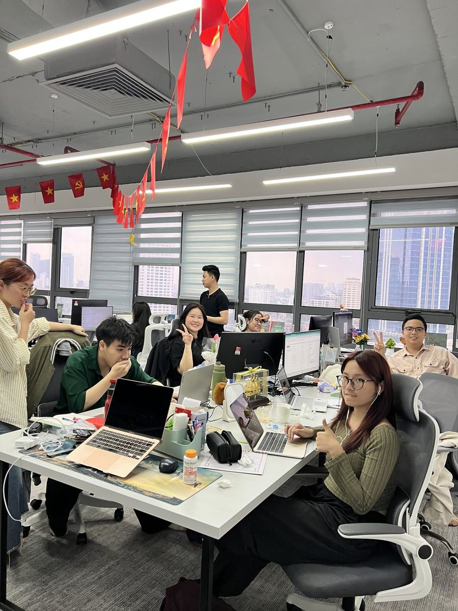
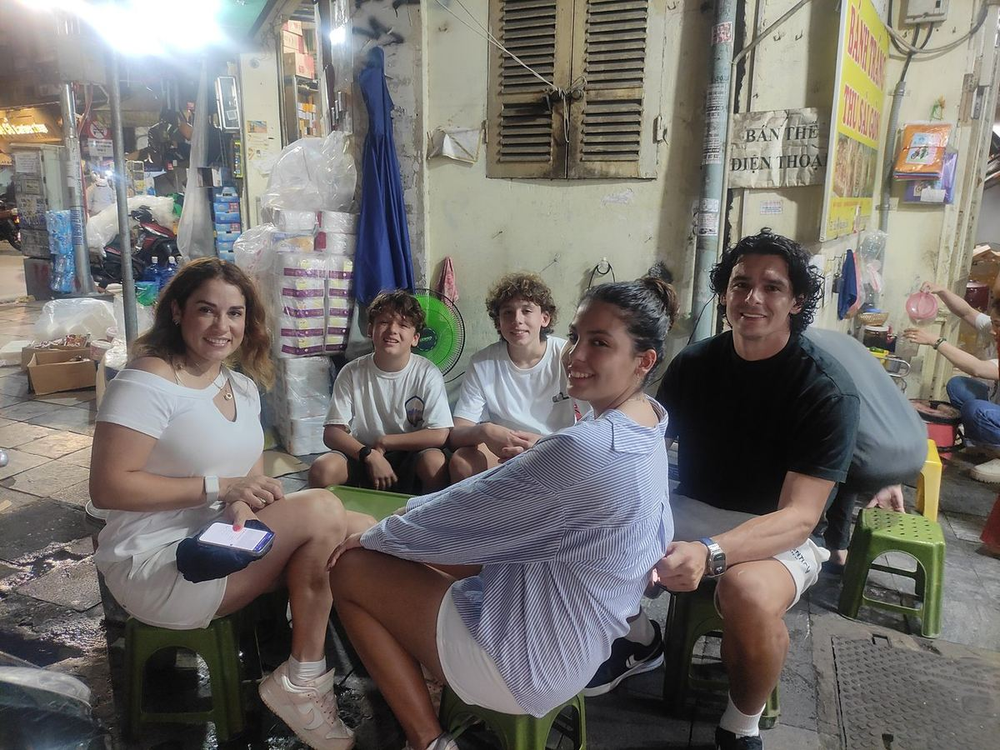
Từ trái qua: team Meetup Travel, góc làm việc hằng ngày của em, chuyến đi Pù Luông cùng team
Marketing, và đoàn khách quốc tế đầu tiên em dẫn năm 2024.
Left to right: the Meetup Travel team, my daily desk, the Pu Luong trip with the Marketing team,
and the first international group I guided, in 2024.
03/2025 – 11/2026 · Full time
Meetup Travel — Digital Marketing Executive (Tự động hoá & Hệ thống)
Meetup Travel — Digital Marketing Executive (Automation & Systems)
Lữ hành đón khách quốc tế, khoảng 40 nhân sự, hai văn phòng. Phụ trách tự động hoá, chatbot AI, email marketing, bảng theo dõi số liệu, website và SEO. Chủ trì dự án CRM nội bộ phía marketing.
Inbound tour operator, around 40 staff, two offices. Owned automation, AI chatbots, email marketing, reporting dashboards, website and SEO. Led the in-house CRM project on the marketing side.
12/2025 – 02/2026 · Freelance
Familia House — Content & TikTok
Familia House — Content & TikTok
Nghiên cứu kênh, xây định hướng nội dung, viết kịch bản và brief dựng khoảng 100 video.
Channel research, content direction, scripts and production briefs for around 100 videos.
09/2022 – 12/2024 · Part time
Công ty TNHH SX TM Nhựa Đại Việt — Content Marketing
Quản lý nội dung 2 fanpage và 3 website, hơn 300 kịch bản video, bài PR và bài sự kiện.
Ran content for 2 fanpages and 3 websites: over 300 video scripts, PR pieces and event articles.
08/2024 – 10/2024 · Part time
Công ty Cổ phần Connect 360 — Content Writer
Connect 360 JSC — Content Writer
Phụ trách nội dung fanpage.
Owned fanpage content.
07/2023 – 12/2023 · Part time
Công ty Visa & Du học Welkin — Content Marketing
Welkin Visa & Study Abroad — Content Marketing
Phụ trách nội dung 2 fanpage, thiết kế ảnh và đăng bài website.
Ran content for 2 fanpages, image design and website publishing.
05 — Dự án tại Meetup Travel · 03/2025 – 11/2026Hành trình của Tuyết Quỳnh
05 — Projects at Meetup Travel · 03/2025 – 11/2026What I built there
Meetup Travel là công ty lữ hành đón khách quốc tế, khoảng 40 nhân sự, hai văn phòng Hà Nội và
TP.HCM, phục vụ khách từ châu Âu, Mỹ, Úc và Trung Đông. Em làm vị trí Digital Marketing Executive,
phụ trách mảng tự động hoá và dữ liệu marketing.
Meetup Travel is an inbound tour operator with around 40 staff and two offices, in Hanoi and
Ho Chi Minh City, serving travellers from Europe, the US, Australia and the Middle East. I worked as
Digital Marketing Executive, owning automation and marketing data.
Dự án 01Chủ trì dự án CRM nội bộ.
Project 01Led the in-house CRM project.
Giá, booking và thanh toán phân mảnh trên nhiều Google Sheet. Mỗi người tính một kiểu nên số liệu lệch nhau và không ai kiểm soát được.
Pricing, bookings and payments were scattered across many Google Sheets. Everyone calculated their own way, so the numbers disagreed and nobody could control them.
Toàn bộ luồng Sale → Sale Leader duyệt → Chăm sóc khách xử lý booking → Kế toán thanh toán nhà cung cấp được chốt và đưa vào dùng thật
The whole flow Sales → Sales Leader approval → Customer Care handles the booking → Accounting pays the supplier was agreed and put into real use
Kho giá tập trung cho tour, dịch vụ xe và sân bay, visa, khách sạn và du thuyền, mỗi hạng dịch vụ một quy tắc tính giá riêng
A central price library for tours, car and airport services, visas, hotels and cruises, each service class with its own pricing rule
Qua 5-7 đợt kiểm thử cùng Sale, CS, Kế toán và dev trước khi nghiệm thu.
Went through 5-7 rounds of testing with Sales, CS, Accounting and the developer before sign-off.
Đội sale đã được đào tạo và dùng công cụ tạo lịch trình mới trong vận hành hằng ngày.
The sales team was trained and now uses the new itinerary builder in day-to-day work.
Kết quả
Đưa dữ liệu giá về một nguồn duy nhất cho khoảng 50 người ở hai văn phòng.
Chặn được những lỗi đã từng xảy ra trong thực tế: cùng một đoàn nhưng hai file cho ra hai con số
khác nhau, hoặc dịch vụ bị đưa sang vận hành khi chưa có giá nhập hợp lệ.
Result
Pricing data now lives in a single source for around 50 people across two offices.
It blocks mistakes that had really happened: the same group producing two different numbers in two
files, or a service moving into operations before a valid price was entered.
Dự án 02Auto rep mail & thu lead 24/7
Project 02Auto email replies & 24/7 lead capture
Khách quốc tế nằm ở nhiều múi giờ. Một email gửi lúc 2h sáng mà tới trưa hôm sau mới có người đọc thì gần như đã mất khách.
International travellers sit across many time zones. An email sent at 2am that nobody reads until the next afternoon is a customer already lost.
Khách tiềm năng chất lượng cao được báo thẳng về Zalo đội sale trong vòng 1 phút, kèm sẵn mức ưu tiên theo nguồn và theo dấu hiệu khách thực sự quan tâm
High quality leads are pushed straight to the sales team on Zalo within one minute, already ranked by source and by signs of real intent
Báo cáo khách hằng ngày và hằng tuần tự về Discord và Zalo, chia sẵn theo thị trường, nguồn, hạng khách sạn và thời điểm khởi hành, sale và quản lý không phải ngồi tổng hợp tay
Daily and weekly lead reports arrive on Discord and Zalo by themselves, already split by market, source, hotel tier and departure window, so sales and managers no longer compile them by hand
2 trợ lý email trực thư khách 24/7: hiểu khách đang cần gì, phát hiện khách chưa được giao cho sale nào để báo gấp, trả lời được cả khách viết tiếng Pháp và tiếng Ả Rập
2 email assistants watch the inbox 24/7: they read what the traveller needs, spot leads not yet assigned to anyone and raise them urgently, and can answer travellers writing in French and Arabic
Sale tra được toàn bộ mạch thư của một khách qua đường link bảo mật, không cần vào hộp thư chung
Sales can pull a traveller’s whole email thread through a secure link, without opening the shared inbox
Nhắn tin tự động qua WhatsApp, phủ 95% đội sale
Automated WhatsApp messaging, covering 95% of the sales team
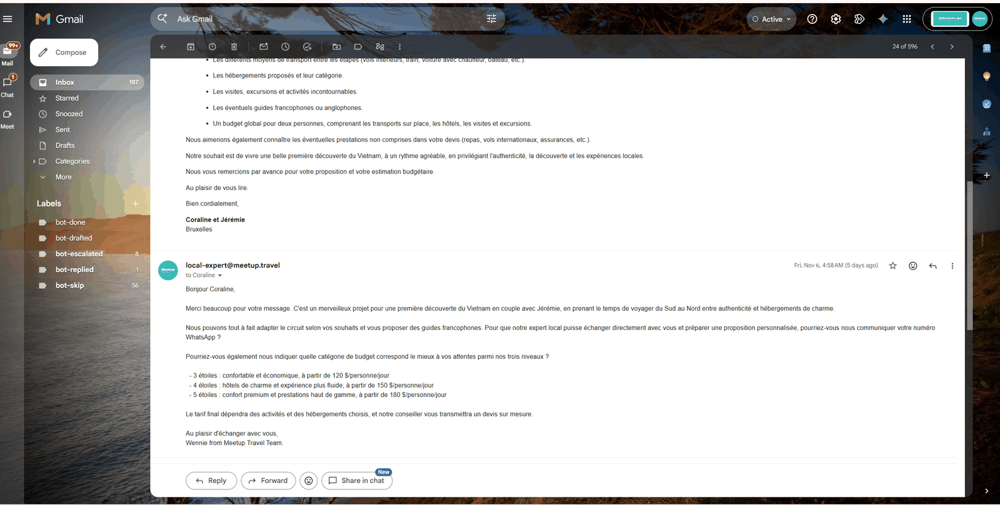
Bot trả lời tiếng Pháp · lúc 1h30 sángBot replying in French · at 1:30am
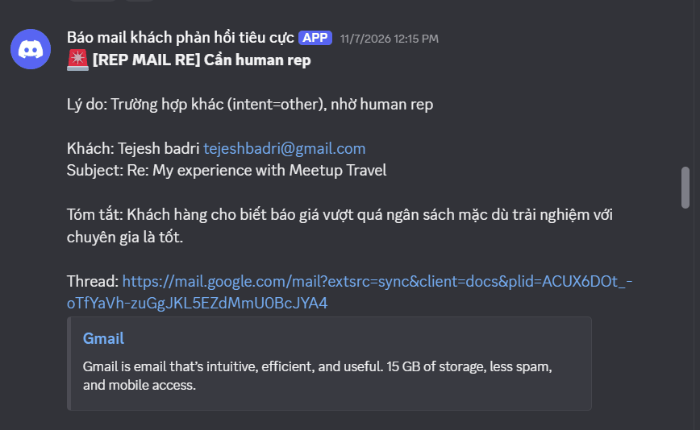
Cảnh báo về Discord · khách cần sale gấpAlert to Discord · lead needs sales now
Kết quả
Khách được phản hồi trong 1–15 phút, kể cả ngoài giờ và cuối tuần.
Thay thế hoàn toàn ManyChat trong luồng trả lời bình luận và tin nhắn đầu tiên.
Result
Travellers get a reply within 1–15 minutes, including out of hours and at weekends.
Fully replaced ManyChat in the comment and first-message reply flow.
Dự án 03Hệ thống chatbot AI social đa kênh
Project 03Multi-channel AI social chatbot system
Mỗi thị trường có thói quen hỏi và rào cản khác nhau, lệch múi giờ. Cần phải trực tin nhắn thủ công, khách hỏi ngoài giờ thì phải đợi. Nhiều tin nhắn thì dễ miss và overload, hành động thủ công & rời rạc.
Every market asks in its own way, has its own objections and sits in a different time zone. Messages had to be watched by hand, and anyone asking out of hours had to wait. High volume meant missed messages and overload, with manual, scattered work.
Hệ thống bot trực 24/7 theo từng thị trường và điểm đến: GCC, Ấn Độ, Philippines, Malaysia, Pháp, Sapa, Đà Nẵng, Phú Quốc,...
Bots on duty 24/7 per market and destination: GCC, India, the Philippines, Malaysia, France, Sapa, Da Nang, Phu Quoc and more
Khách sắp khởi hành trong vòng một tháng được hệ thống đẩy lên ưu tiên xử lý trước
Travellers departing within a month are pushed to the front of the queue by the system
Toàn bộ dữ liệu bot về CRM: lịch sử chat, tin nhắn sale, cảnh báo khách về Zalo
All bot data flows into the CRM: chat history, sales messages, lead alerts to Zalo
Bộ hướng dẫn chuẩn và quy trình làm chatbot đã bàn giao cho người kế nhiệm, hệ thống chạy tiếp không phụ thuộc vào một người
The written standard and the chatbot build process were handed over to my successor, so the system keeps running without depending on one person
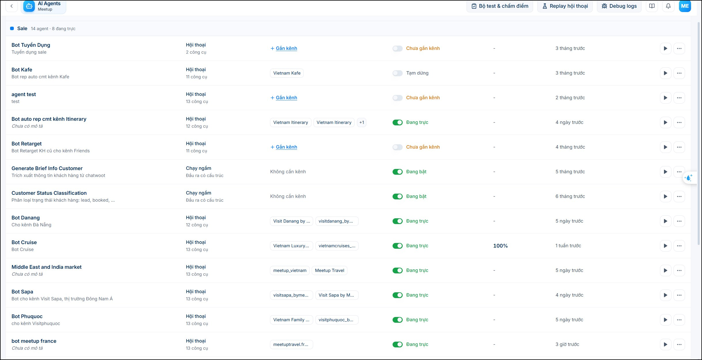
Hệ thống bot · các kênh social của MeetupThe bot system · across Meetup social channels
Kết quả
Bot xử lý 90% tình huống thường gặp, fanpage tự chạy; chỉ cần 1 người trực check lỗi cần human support (nếu có).
Quy trình đánh giá chất lượng khách đi kèm giúp chi phí mỗi tin nhắn quảng cáo giảm rõ rệt
so với trước khi có quy trình.
Result
The bots handle 90% of the usual situations and the fanpages run themselves; only one person is
needed to watch for cases that still want a human. The lead quality scoring process that came with it
cut the cost per ad message noticeably compared with before.
Dự án 04Agent tự đăng bài và trả lời bình luận.
Project 04An agent that posts and answers comments.
10 kênh social cần đăng đều đặn, trả lời bình luận và theo dõi nhóm mỗi ngày. Nhân lực không đủ để trực xuyên suốt trong khung giờ cao điểm.
Ten social channels needed steady posting, comment replies and group monitoring every day. There were not enough people to cover the peak hours end to end.
10 kênh Instagram, Facebook và TikTok được agent tự lên lịch và đăng bài theo kế hoạch nội dung tuần.
10 channels on Instagram, Facebook and TikTok scheduled and posted by the agent from the weekly content plan.
Trả lời bình luận tự động tại 10 kênh và 10 nhóm trong khung giờ 10h–22h, đảm bảo phản hồi đúng giờ cao điểm mà không cần người trực.
Automatic comment replies across 10 channels and 10 groups from 10am to 10pm, so peak hours get answered without anyone on duty.
Agent phân biệt bình luận spam, bình luận cần sale can thiệp và bình luận có thể tự xử lý, hạn chế tối đa rủi ro trả lời sai tình huống.
The agent tells spam apart from comments that need a salesperson and comments it can handle itself, keeping the risk of a wrong reply as low as possible.
Toàn bộ hoạt động được log lại để kiểm tra và điều chỉnh khi cần.
Everything it does is logged so it can be checked and adjusted when needed.
Kết quả
Thay thế hoàn toàn việc trực kênh thủ công tại 10 kênh và 10 nhóm trong khung 10h–22h, giải phóng thời gian nhân sự cho những việc cần phán đoán thực sự.
Result
Fully replaced manual channel duty across 10 channels and 10 groups from 10am to 10pm, freeing people for the work that really needs judgement.
Dự án 05Dashboard cho Sale & Marketing.
Project 05Dashboards for Sales & Marketing.
2 bảng dashboard cho Sale và Marketing, tự cập nhật mỗi sáng: tỷ lệ chuyển đổi, lọc theo quốc gia, nguồn khách, doanh số tháng và dự báo,..
2 dashboards for Sales and Marketing, refreshing every morning: conversion rate, filters by country and lead source, monthly revenue and forecast, and more
Bảng cho Sale đi qua 5 bản theo góp ý của Sale Leader cho tới khi dùng được hằng ngày
The sales dashboard went through 5 versions on the Sales Leader’s feedback until it was usable every day
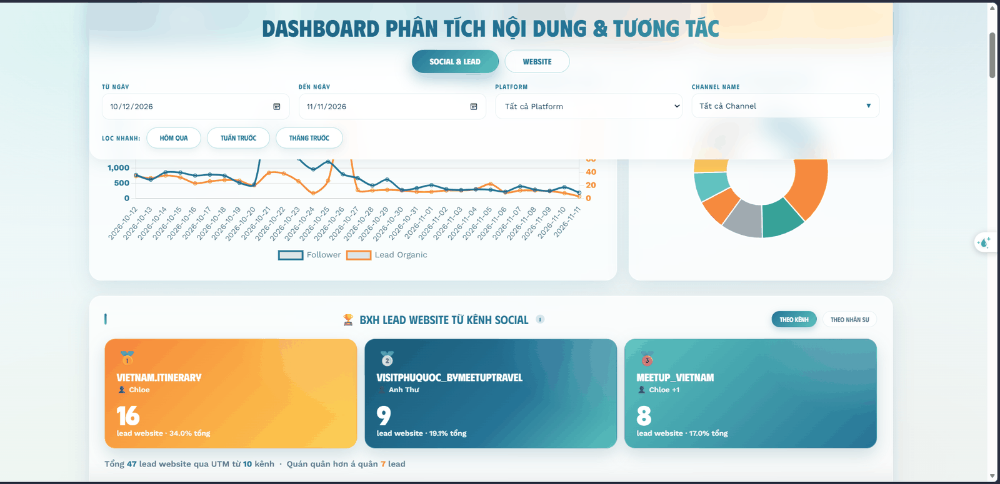
Dashboard sale · tự cập nhật mỗi sáng, đã làm mờ dữ liệuSales dashboard · refreshes every morning, data blurred
Dự án 06Website và luồng tự viết bài SEO.
Project 06Website and a self-writing SEO pipeline.
Website thiếu nội dung theo kế hoạch từ khoá và tồn nhiều lỗi kỹ thuật, trong khi không có ngân sách thuê thêm người viết.
The website was short of content against the keyword plan and carried a backlog of technical issues, with no budget to hire more writers.
Kế hoạch từ khoá 49 nhóm chủ đề, nhóm các bài liên quan lại với nhau để Google hiểu website mạnh về mảng nào
A keyword plan of 49 topic clusters, grouping related articles so Google can tell what the site is strong at
19 bài viết tay và 8 gói tour trong giai đoạn đầu
19 articles written by hand and 8 tour packages in the first phase
Thêm 49 bài do luồng tự viết mỗi sáng, website phủ kín kế hoạch từ khoá mà không phải thuê thêm người viết
Plus 49 articles from the pipeline that writes every morning, so the site covers the keyword plan without hiring writers
Website sạch các lỗi kỹ thuật cơ bản: link gãy, sơ đồ trang, cấu trúc bài,..
The site cleared of basic technical issues: broken links, sitemap, article structure and so on
Kết quả trên Google Search Console
Results in Google Search Console
Giai đoạn 01/07 – 07/11/2026
Period 01/07 – 07/11/2026
3.491
3,491
lượt nhấp từ Google
clicks from Google
67.041
67,041
lượt hiển thị trên Google
impressions on Google
104
bài blog đã được Google đưa vào kết quả tìm kiếm
blog posts indexed by Google
5,21%
5.21%
tỷ lệ nhấp trung bình
average click-through rate
671 → 1.012
671 → 1,012
lượt nhấp mỗi tháng, từ tháng 7 đến tháng 10/2026, tăng 51%
clicks per month, July to October 2026, up 51%
10.595 → 23.610
10,595 → 23,610
lượt hiển thị mỗi tháng, cùng giai đoạn, tăng 123%
impressions per month, same period, up 123%
Phần lớn lượt nhấp hiện vẫn đến từ những người
đã biết tên thương hiệu rồi tìm trên Google. Nhóm bài blog mới đang ở giai đoạn tích luỹ
hiển thị: 104 bài đã vào được kết quả tìm kiếm và đóng góp 42.284 lượt hiển thị, nhưng tỷ lệ
nhấp còn thấp.
Most clicks still come from people who already know the brand name
and then search for it on Google. The new blog cluster is in its impression-building phase:
104 articles are indexed and contributed 42,284 impressions, but the click-through rate is still low.
Dù vậy đã có những từ khoá không mang tên thương hiệu lọt lên đầu, ví dụ
local vietnam travel agency ở vị trí 1,3 và best neighborhoods in ho chi minh city
ở vị trí 1.
Even so, some non-brand keywords have reached the top, for example
local vietnam travel agency at position 1.3 and best neighborhoods in ho chi minh city
at position 1.
Kết quả trên Google Analytics
Results in Google Analytics
Giai đoạn 01/07 – 09/11/2026
Period 01/07 – 09/11/2026
20.057
20,057
người truy cập
visitors
173.430
173,430
lượt tương tác trên trang
engagements on the site
57 giây
57 sec
thời gian ở lại trung bình
average time on page
Nguồn khách vào website nhiều nhất lần lượt là Instagram, vào thẳng website, quảng cáo Meta và
tìm kiếm Google. Khách tập trung ở Singapore, Hà Nội, Kuala Lumpur và Sydney.
The biggest traffic sources, in order, are Instagram, direct visits, Meta ads and Google search.
Visitors cluster in Singapore, Hanoi, Kuala Lumpur and Sydney.
Dự án 07Hệ thống email marketing tự động.
Project 07Automated email marketing system.
Một tệp email lớn tích luỹ qua nhiều năm, do sale nhập tay nên sai rất nhiều. Tệp khách trả lời "chưa sẵn sàng book" gần như bị bỏ ngỏ.
A large email list built up over years, typed in by hand by sales and full of errors. The segment that answered “not ready to book” was almost left alone.
9 luồng email đang chạy: chuỗi kể chuyện khách thật, bộ 7 lịch trình mẫu cho khách chưa chốt, thư gợi ý theo thời tiết đúng tháng khách đi, thư khảo sát sau khi giao sale, thư nhắc sau khi gửi lịch trình
9 email flows running: a real-customer story series, a set of 7 sample itineraries for undecided travellers, weather-based suggestions matched to their travel month, a survey after hand-off to sales, and a reminder after an itinerary is sent
Khoảng 80 mẫu thư, trong đó một luồng có hơn 26 phiên bản tuỳ nhu cầu, kiểu đi và điểm đến của khách
Around 80 email templates, one flow alone holding more than 26 variants by need, travel style and destination
Danh sách gửi được làm sạch mỗi ngày nên tên miền công ty giữ được uy tín: 96,21% thư vào hộp thư chính, 0,01% bị báo spam trên một tệp vốn nhập tay và sai rất nhiều
The sending list is cleaned daily so the company domain keeps its reputation: 96.21% delivered to the primary inbox, 0.01% marked as spam on a list that was typed by hand and full of errors
Sale Leader có trang theo dõi hiệu quả và thư viện mẫu thư; chính số liệu đó dẫn tới quyết định dừng 3 luồng kém hiệu quả và giãn nhịp gửi để bớt người huỷ đăng ký
The Sales Leader has a performance page and a template library; those numbers led to the decision to stop 3 weak flows and slow the sending rhythm to reduce unsubscribes
Số liệu thực tế
The actual numbers
Giai đoạn 05/05 – 09/11/2026
Period 05/05 – 09/11/2026
33.978
33,978
email đã gửi
emails sent
96,21%
96.21%
vào được hộp thư người nhận
delivered to the recipient inbox
31,06%
31.06%
tỷ lệ mở thư Brevo ước tính; phần đo được chắc chắn bằng pixel theo dõi là 23,91%
open rate as estimated by Brevo; the part measured for certain with a tracking pixel is 23.91%
0,01%
0.01%
tỷ lệ bị khách báo spam
marked as spam by recipients
Con số em thấy đáng nói nhất không phải tỷ lệ mở, mà là
96,21% thư vào được hộp thư và chỉ 0,01% bị báo spam
trên một tệp email vốn nhập tay và sai rất nhiều. Đó là phần khó nhất của dự án này.
The number I find most worth mentioning is not the open rate, but
96.21% reaching the inbox with only 0.01% marked as spam
on an email list that was typed by hand and full of errors. That was the hardest part of this project.
Thống kê gửi mail · 05/05 – 09/11/2026Email sending stats · 05/05 – 09/11/2026
Khách có phản hồi thật và bot xử lý được
Real replies, handled by the bot
Khi khách bấm trả lời, thư được tiếp nhận và trả lời ngay, đồng thời được phân loại sẵn
theo tình huống: đã trả lời xong,
cần nhắc lần 1, cần nhắc lần 2, cần báo gấp sang Zalo, hay trường hợp cần người thật
tiếp nhận.
When someone hits reply, the email is picked up and answered straight away, and sorted by
situation at the same time: already answered, needs a first nudge, needs a second nudge,
needs an urgent hand-off to Zalo, or needs a real person to take over.
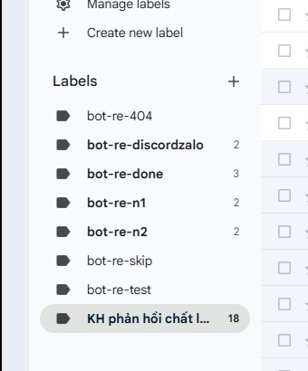
Nhãn bot tự gắn · kiểm soát từng tình huống trả lờiLabels the bot applies · every reply situation under control
Kết quả
Đưa chi phí công cụ gửi mail về gói miễn phí mà vẫn giữ nguyên các luồng đang chạy.
Tệp khách "chưa sẵn sàng book" được nuôi tự động mà sale không phải bỏ thêm giờ.
87 cuộc hội thoại khách trả lời đã được bot tiếp nhận và phân loại.
Result
Brought the sending tool cost down to the free plan while keeping every flow running.
The “not ready to book” segment is nurtured automatically without sales spending extra hours.
87 reply conversations have been picked up and sorted by the bot.
Dự án 08Hỗ trợ chạy quảng cáo.
Project 08Paid ads support.
Chạy và tối ưu chiến dịch tuyển dụng cho team HR, gồm cả định hướng hình ảnh và quy trình đánh dấu ứng viên
Ran and optimised the recruitment campaign for the HR team, including the visual direction and the candidate tagging process
Hỗ trợ chiến dịch tìm khách cho các gói tour tại thị trường Philippines, Ấn Độ và Trung Đông
Supported lead generation campaigns for tour packages in the Philippines, India and the Middle East
Xây quy trình đánh giá chất lượng khách để quảng cáo học đúng tệp, thay vì chạy theo số lượng khách thô
Built a lead quality scoring process so the ads learn from the right audience instead of chasing raw lead volume
98
hồ sơ ứng viên sale trong tháng cao điểm
sales applications in the peak month
37
hồ sơ qua vòng sơ loại
applications through screening
11
ứng viên qua phỏng vấn
candidates through interview
Dự án 09Website tuyển dụng và tuyến bài Emagazine.
Project 09Careers website and the Emagazine series.
Công ty cần tuyển liên tục, nhưng tin tuyển dụng viết kiểu văn bản hành chính thì không ai đọc hết. Ứng viên giỏi muốn biết vào đây rồi sẽ lớn lên thế nào, chứ không chỉ muốn biết lương bao nhiêu.
The company hires continuously, but a job ad written like an official notice gets nobody to the end. Strong candidates want to know how they will grow here, not only what the salary is.
Xây website tuyển dụng riêng 9 trang: trang chủ, danh sách vị trí, 5 trang mô tả công việc và trang phúc lợi. Mỗi vị trí có một cái tên kể được câu chuyện, ví dụ Sales Leader Trainee đặt tên Cá chép hoá rồng, Tour Consultant tiếng Pháp
Built a dedicated careers website of 9 pages: home, open roles, 5 job description pages and a benefits page. Each role got a name that tells a story, for example Sales Leader Trainee named Carp turning into a dragon, and the French-speaking Tour Consultant
Viết tuyến bài Emagazine kể chuyện người thật đang làm trong công ty, song ngữ Việt và Anh cùng team HR
Wrote the Emagazine series telling the stories of real people in the company, bilingual Vietnamese and English, together with the HR team
Viết bộ hướng dẫn chuẩn và đào tạo bàn giao toàn bộ quy trình làm Emagazine cho team HR
Wrote the content standard and trained the HR team to take over the whole Emagazine process
Xử lý các tác vụ vận hành trên website: đóng vị trí đã tuyển đủ, bổ sung thông tin liên hệ HR
Trang vị trí đang tuyển · 13 vị trí, đánh giá 4,9 saoOpen roles page · 13 roles, rated 4.9 stars
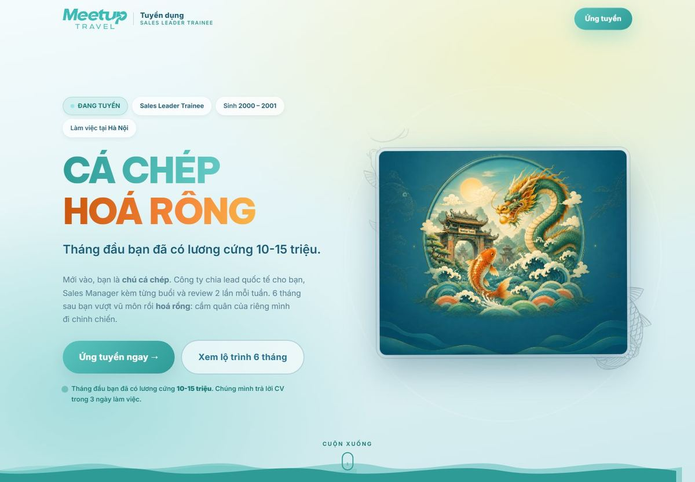
Sales Leader Trainee · Cá chép hoá rồngSales Leader Trainee · Carp turning into a dragon
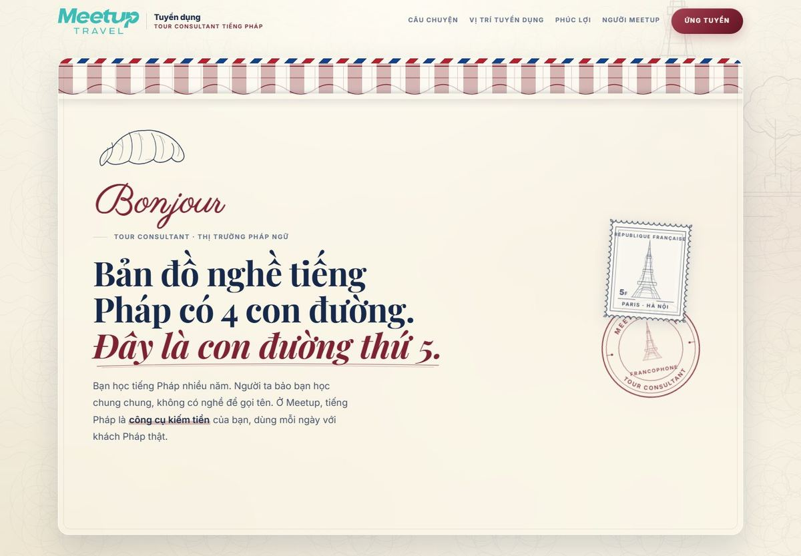
Tour Consultant tiếng Pháp · Con đường thứ nămFrench-speaking Tour Consultant · The fifth path
Tuyến bài Emagazine
The Emagazine series
Mỗi bài là chân dung một người đang làm ở công ty: viết song ngữ, có ảnh chụp riêng và những
con số thật trong công việc của họ. Em phụ trách phần thiết kế và biên tập, phối hợp với team
HR để lấy nội dung.
Each piece is a portrait of someone working at the company: written bilingually, with their own
photos and real numbers from their work. I handled the design and the editing, working with the
HR team on the content.
Meetup Magazine #01
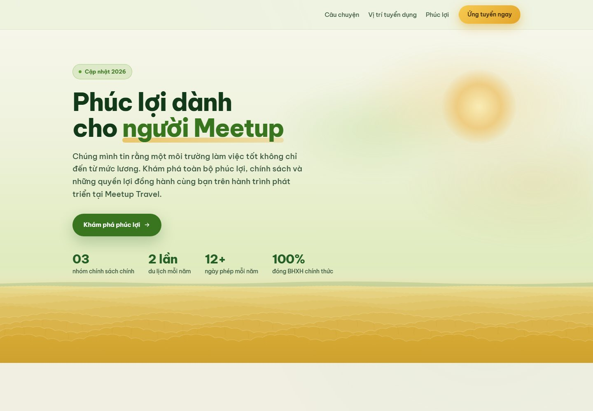
Trang phúc lợi · viết lại theo quy chuẩn nội dungBenefits page · rewritten to the content standard
6 bài
6 pieces
Emagazine đang chạy trên website
Emagazine pieces live on the website
439
lượt xem, 209 người đọc
views, 209 readers
10–26%
tỷ lệ thoát của hai bài tốt nhất, nghĩa là người đọc đi tiếp chứ không bỏ ngang
bounce rate of the two best pieces, meaning readers carried on instead of dropping out
316
lượt nhấp từ Google vào trang tuyển dụng
clicks from Google to the careers pages
Kết quả
Trang tuyển dụng đạt tỷ lệ nhấp 26% trên Google, cao gấp khoảng năm lần mức trung bình
của cả website, ở vị trí trung bình 4,6. Team HR tự vận hành được quy trình làm Emagazine
sau khi nhận bàn giao. Tài liệu quy chuẩn nội dung trở thành tài liệu dùng chung cho các sản phẩm
viết của công ty.
Result
The careers pages reach a 26% click-through rate on Google, around five times the site
average, at an average position of 4.6. The HR team now runs the Emagazine process on its own
after the hand-off, and the content standard document became a shared reference for every written
product in the company.
06 — Nền content marketingTrước khi làm hệ thống, em làm nội dung.
06 — Content marketing foundationBefore the systems, I made the content.
Nội dung social cho Meetup · 2025
Social content for Meetup · 2025
Giai đoạn đầu ở Meetup em còn trực tiếp làm nội dung cho kênh Instagram, trước khi chuyển hẳn
sang mảng hệ thống.
In my first stretch at Meetup I still made the Instagram content myself, before moving over to
systems for good.
Tăng hơn 2.000 người theo dõi · giai đoạn phụ trách kênhOver 2,000 new followers · while I ran the channel
Familia House · Freelance Content & TikTok · 12/2025 – 02/2026
Familia House · Freelance Content & TikTok · 12/2025 – 02/2026
Chuỗi homestay cao cấp ở Hà Nội, định vị "ngôi nhà thứ hai" cho nhóm gia đình và nhóm bạn đông người, view Hồ Tây và Phố Cổ.
A premium homestay chain in Hanoi, positioned as a “second home” for families and larger groups of friends, with views over West Lake and the Old Quarter.
Nghiên cứu kênh và phân tích các kênh homestay nổi bật để tìm công thức nội dung phù hợp
Channel research and analysis of the standout homestay channels to find a content formula that fits
Xây định hướng nội dung theo tỷ lệ 40% giải quyết vấn đề, 30% góc nhìn người trong cuộc, 20% giải trí, 10% kiến thức, nhắm hai nhóm khách: gia đình nhiều thế hệ và nhóm bạn Gen Z
Built the content direction on a 40% problem-solving, 30% insider view, 20% entertainment, 10% know-how split, aimed at two audiences: multi-generation families and Gen Z friend groups
Lên ý tưởng, viết kịch bản và brief dựng khoảng 100 video, nhịp 4–5 video mỗi tuần, kèm kế hoạch nội dung cho Facebook và Threads
Ideas, scripts and production briefs for around 100 videos at 4–5 videos a week, plus the content plan for Facebook and Threads
Content Marketing tại ba doanh nghiệp · 2022 – 2024
Content Marketing at three companies · 2022 – 2024
Công ty TNHH SX TM Nhựa Đại Việt (09/2022 – 12/2024, part time) — phụ trách nội dung 2 fanpage và 3 website. Phần em làm: hơn 300 kịch bản video ngắn, bài PR và bài sự kiện cho báo chí. Số của cả kênh trong hơn 2 năm đó: fanpage 2,7 triệu lượt tiếp cận, 115.100 lượt xem, 22.300 lượt tương tác; website 1,27 triệu lượt hiển thị, 48.200 lượt nhấp. Đây là số của cả kênh: giai đoạn đó có ngân sách quảng cáo chạy song song và là kết quả của cả team, không phải một mình em đẩy lên
Dai Viet Plastics Manufacturing & Trading Co., Ltd (09/2022 – 12/2024, part time) — ran content for 2 fanpages and 3 websites. My part: over 300 short video scripts, PR pieces and event articles for the press. Channel-wide numbers over those two years: fanpage 2.7 million reach, 115,100 views, 22,300 engagements; website 1.27 million impressions, 48,200 clicks. These are whole-channel numbers: there was ad budget running alongside and they are the result of the whole team, not something I drove on my own
Công ty Cổ phần Connect 360 (08/2024 – 10/2024, part time) — duy trì nội dung fanpage, sản xuất video TikTok và Reels theo kế hoạch tháng
Connect 360 JSC (08/2024 – 10/2024, part time) — kept the fanpage content running, produced TikTok videos and Reels against the monthly plan
Công ty Visa & Du học Welkin (07/2023 – 12/2023, part time) — quản lý nội dung 2 fanpage, đạt 7.100 lượt tiếp cận và 2.600 lượt truy cập; thiết kế ảnh và đăng bài website
Welkin Visa & Study Abroad (07/2023 – 12/2023, part time) — managed content for 2 fanpages, reaching 7,100 people and 2,600 visits; image design and website publishing
Bài SEO & bài PR sự kiện · Xem danh sách →SEO articles & event PR · See the list →Thứ hạng trên Google · chụp từ kết quả tìm kiếmGoogle rankings · captured from the search resultsThiết kế ảnh · bài đăng và ấn phẩm truyền thôngImage design · posts and marketing collateral
Sản xuất video ngắn · hơn 300 kịch bản
Short-form video · over 300 scripts
Mảng video là nơi em học được cách nghĩ theo câu mở đầu và theo nhịp giữ chân người xem, thứ sau
này em mang sang cả việc viết kịch bản cho bot và viết bài SEO. Em làm trọn quy trình: nghiên cứu,
viết kịch bản, dựng video và lồng tiếng.
Xem toàn bộ video trên Facebook →
Video is where I learned to think in opening lines and in the rhythm that keeps someone watching,
something I later carried into writing bot scripts and SEO articles. I ran the full process:
research, script, edit and voice-over.
See all the videos on Facebook →
Quy trình làm video · nghiên cứu, kịch bản, dựng, lồng tiếngThe video process · research, script, edit, voice-overChiến dịch thương hiệu Casary · Xem thêm →Casary brand campaign · See more →
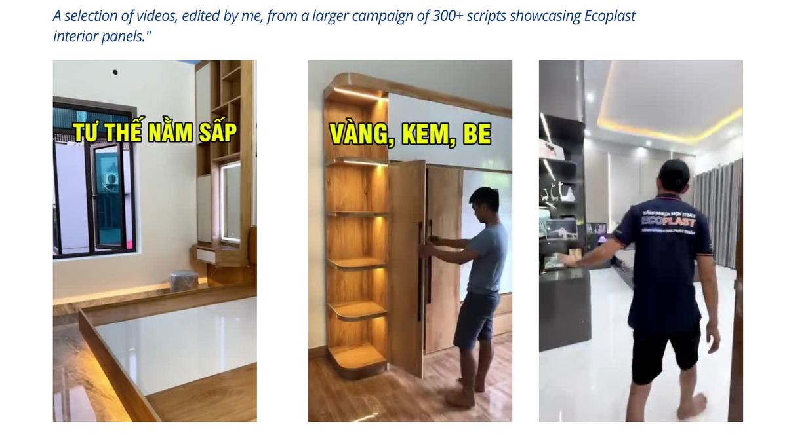
Tuyển tập chọn lọc · hơn 300 kịch bảnSelected collection · over 300 scripts
Video em tự làm cho kênh riêng
Videos I make for my own channel
Ngoài video làm cho thương hiệu, em cũng tự quay dựng cho kênh riêng để giữ tay nghề và thử
công thức nội dung mới trước khi áp vào việc của công ty. Bấm vào ảnh để xem video.
Xem kênh TikTok →
Besides the brand work, I shoot and edit for my own channel to keep my hands in and to test new
content formulas before applying them at work. Tap a thumbnail to watch.
See the TikTok channel →
POV di tích nghìn năm · 2,6k lượt xemPOV at a thousand-year-old site · 2.6k views
Những việc ngoài bàn phím
The work away from the keyboard
Trước khi ngồi viết nội dung cho một thương hiệu du lịch, em đã trực tiếp đi dẫn khách, hỗ trợ sự
kiện. Giúp em có thêm trải nghiệm & bối cảnh để hiểu thêm về ngành du lịch.
Before writing content for a travel brand, I guided travellers and worked events myself. That gave me
the experience and the context to understand the industry better.
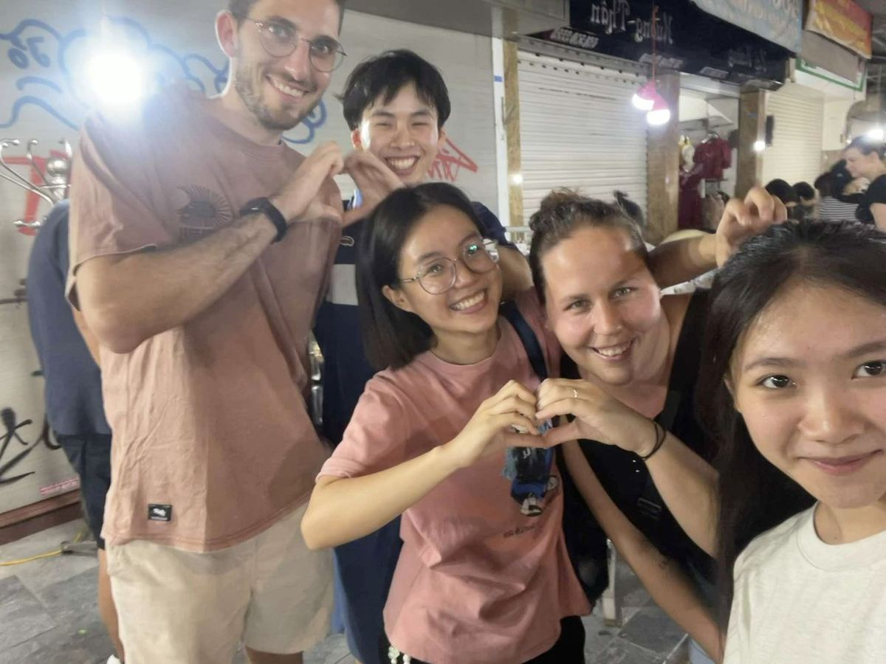
Dẫn khách quốc tế · Hanoi walking & food tour phố cổGuiding international travellers · Hanoi Old Quarter walking & food tourChạy sự kiện · checklist và vận hành tại chỗRunning events · checklists and on-site operations
Kỹ năng thuyết trình và giao tiếp
Presenting and communication
Phần việc đứng trước người thật: dẫn tour cho khách nước ngoài, đứng quầy tư vấn ở sự kiện,
thuyết trình và hỗ trợ phiên dịch khi công ty tiếp đối tác quốc tế.
The part of the job spent in front of real people: guiding tours for international travellers,
staffing the advice desk at events, presenting and interpreting when the company hosted
international partners.
★★★★★
“Our guide was nice and knowledgable and the tour was off the beaten path. The only thing
that we didn't like is that the cathedral was closed and we couldn't see the interior.”
Đánh giá của khách sau tour đi bộ phố cổ Hà NộiA traveller review after the Hanoi Old Quarter walking tour
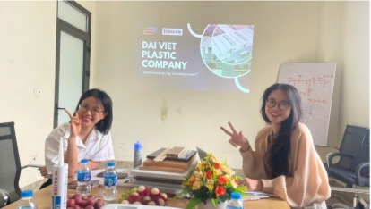
Thuyết trình sản phẩm · Nhựa Đại ViệtProduct presentation · Dai Viet Plastics
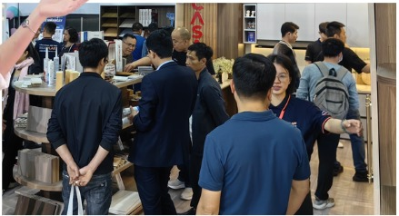
Tư vấn khách tại sự kiệnAdvising customers at an event
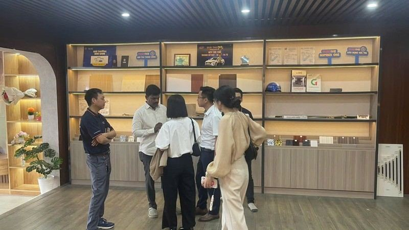
Hỗ trợ phiên dịch · tiếp đối tác quốc tếInterpreting · hosting international partners
07 — Dự án cá nhânNhững thứ em làm ngoài giờ để tự học.
07 — Personal projectsWhat I build after hours to teach myself.
08 — Chứng chỉ & đánh giáChứng chỉ và nhận xét.
08 — Certificates & reviewsCertificates and feedback.
Chứng chỉ Content Marketing · và giao tiếp tiếng AnhContent Marketing certificate · and English communication
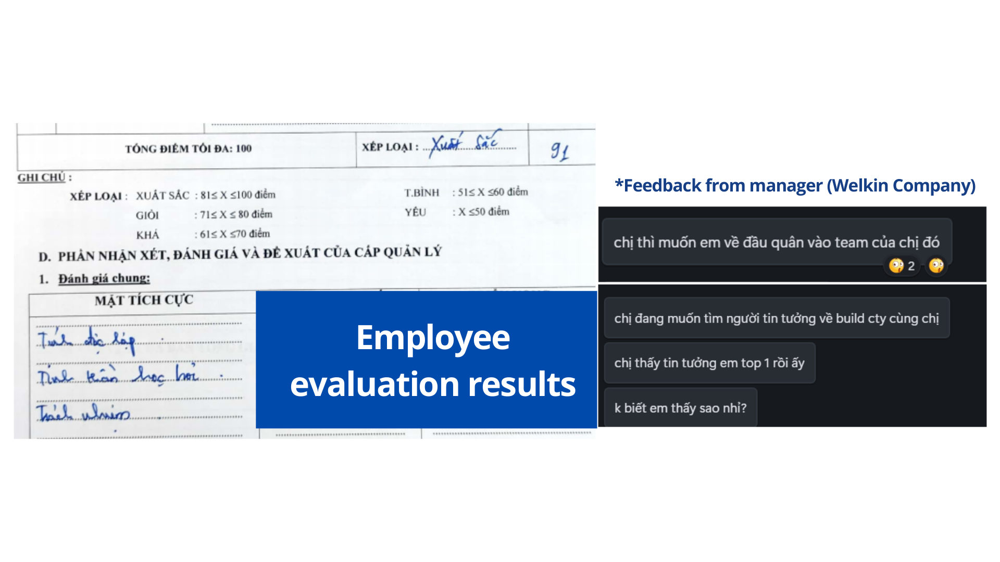
Đánh giá nhân sự 91/100 · xếp loại Xuất sắc, công ty WelkinPerformance review 91/100 · rated Excellent, at Welkin
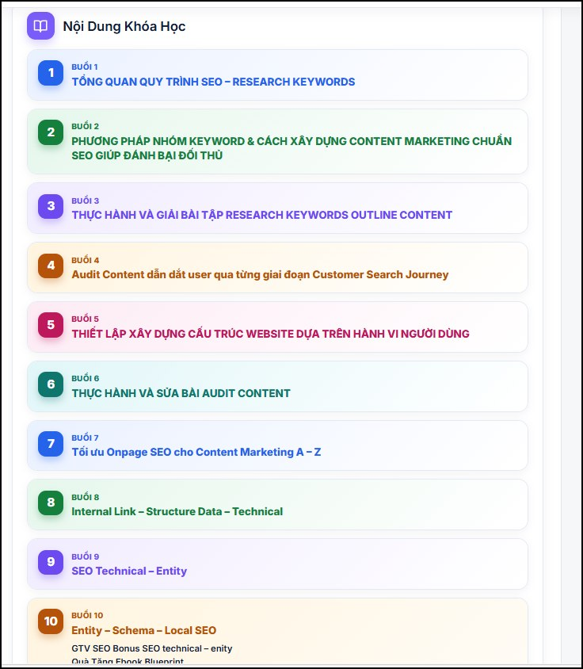
Khoá SEO Blueprint · 10 buổi, từ research keyword tới entitySEO Blueprint course · 10 sessions, from keyword research to entities
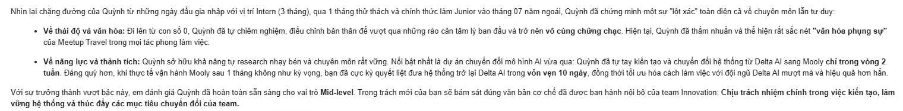
Nhận xét của leader · trích email đề xuất thăng chức Mid-level, 05/2026My leader’s feedback · from the email proposing my promotion to Mid-level, 05/2026
Chưa biết thì học, Cứ làm đi rồi sẽ biết
If you do not know it, learn it. Just start and you will.
2 năm trước em chưa viết nổi một dòng code. Cái gì em làm được trong portfolio này
cũng đều bắt đầu từ việc không biết, rồi ngồi mò cho tới khi nó chạy.
Two years ago I could not write a single line of code. Everything in this portfolio started
from not knowing, then sitting with it until it ran.
09 — Liên hệCảm ơn anh chị đã đọc tới đây.
09 — ContactThank you for reading this far.
Nếu công ty mình đang cần một bạn làm marketing hiểu cả nội dung lẫn hệ thống đứng sau nó,
em rất mong được trao đổi thêm.
If your company needs a marketer who understands both the content and the systems behind it,
I would love to talk.